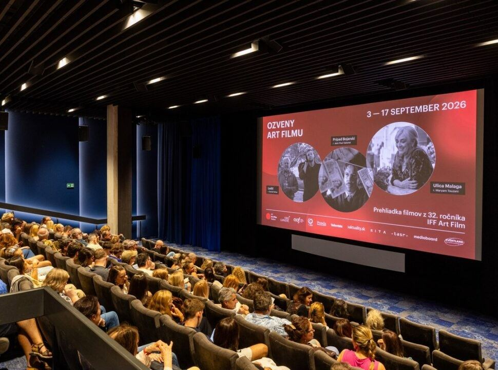

Festivals · Film
IFF Art Film 2027
- Dates
- –
- Venue
- Venues in Košice
- Location
- Košice, Slovakia
- Format
- In-person
- Category
- Film
- Industry
- Film
- Organiser
- ART FILM FEST s.r.o.
- Price
- Official 9 November 2026 announcement of the 33rd edition: classic full-festival Cinepass €45; student full-festival Cinepass €30; senior Cinepass €30, on sale at aff.cinepass.sk at unchanged prices.
- Official website
- https://iffartfilm.com/blog/aktuality/2026/11/iff-art-film-ohlasuje-termin-33-rocnika-a-spusta-predaj-prvych-cinepassov/
- Tickets
- https://aff.cinepass.sk/
About
Dates are local civil dates in Slovakia (Central European Time, UTC+1 / UTC+2 in summer).
Topics: world cinema, feature film, Central and Eastern European film.
No organiser attendance figure found on the official pages fetched 24 Nov 2026. Ranked by our estimated size tier 'small' (under 10,000 attendees/visits), a judgement from format, venue and scale, not an official number.
Sources
- Official — https://iffartfilm.com/blog/aktuality/2026/11/iff-art-film-ohlasuje-termin-33-rocnika-a-spusta-predaj-prvych-cinepassov/
- Official — https://iffartfilm.com/en/festival/rules-regulations/
- Ticket price — https://aff.cinepass.sk/